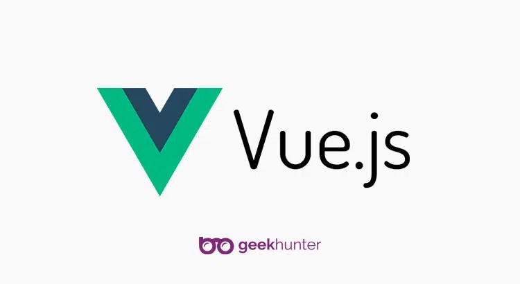
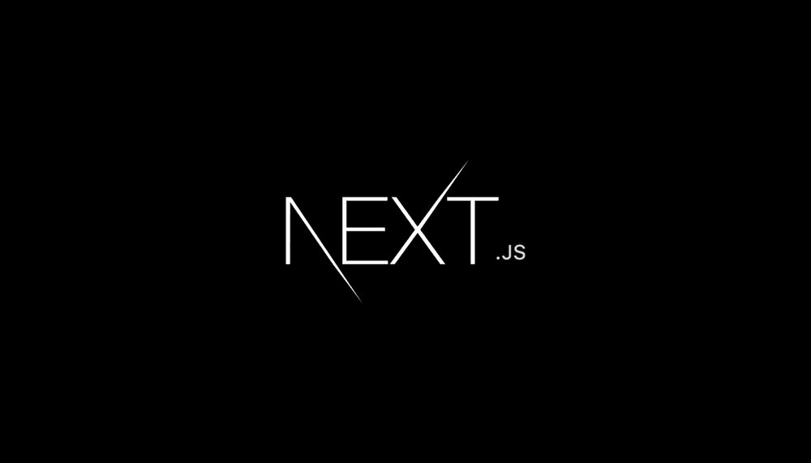
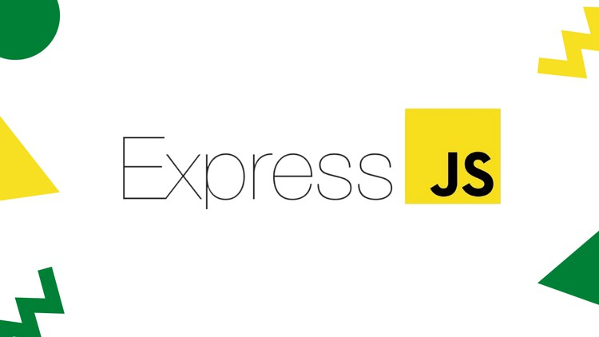

D3.js (Data-Driven Documents) é uma biblioteca JavaScript poderosa e flexível para a manipulação de documentos com base em dados. Ela permite a criação de visualizações dinâmicas e interativas em navegadores web usando HTML, SVG e CSS. Criado por Mike Bostock, D3.js é amplamente utilizado para criar gráficos, mapas, diagramas e outros tipos de visualizações complexas.
JavaScript é uma linguagem de programação amplamente utilizada para desenvolver e controlar elementos interativos em páginas web.Originalmente criado para tornar as páginas web mais dinâmicas e interativas, JavaScript evoluiu significativamente e agora é usado em uma variedade de aplicações tanto no front-end quanto no back-end.
JavaScript é uma linguagem de programação poderosa e versátil, essencial para o desenvolvimento web moderno. Sua capacidade de ser executada tanto no cliente quanto no servidor a torna uma ferramenta valiosa para desenvolvedores, permitindo criar experiências de usuário ricas e aplicativos web complexos.
Frameworks
Frameworks são conjuntos estruturados de ferramentas e bibliotecas que fornecem uma base de código reutilizável, padronizada e organizada para facilitar o desenvolvimento de aplicações. Eles ajudam a resolver problemas comuns e a estruturar o código de maneira eficiente, promovendo boas práticas e padrões de desenvolvimento; Acompanhe a seguir alguns exemplos:
Masonry é um layout de grade que se ajusta automaticamente à altura dos itens, proporcionando um arranjo visualmente agradável e compacto, similar a um layout de tijolos. Esse efeito é particularmente útil para exibir conteúdos de tamanhos variados, como galerias de imagens, portfólios, e blogs. Embora o nome "Masonry" esteja frequentemente associado ao plugin JavaScript jQuery Masonry, a técnica pode ser implementada de várias maneiras.
Popper.js é uma biblioteca JavaScript utilizada para gerenciar poppers (elementos flutuantes que "saltam" de um elemento de referência), como tooltips, dropdowns e outros elementos de interface que precisam ser posicionados de forma dinâmica em relação a outro elemento ou janela. Popper.js oferece uma solução robusta para o posicionamento de elementos e lida com muitos casos de uso complexos, garantindo que os poppers permaneçam dentro dos limites da tela e não sejam obscurecidos por outros elementos.
Parsley.js é um framework JavaScript de código aberto usado para validação de formulários no navegador. Ele fornece um conjunto abrangente de recursos para validar os dados inseridos em campos de formulário, como campos obrigatórios, formatos de dados específicos, validação personalizada e muito mais. O Parsley.js também oferece suporte a validação assíncrona, validação condicional e a exibição de mensagens de erro personalizadas. Com essa biblioteca, os desenvolvedores podem implementar facilmente validações de formulário robustas e interativas em seus projetos web. Para começar a usar o Parsley.js, você precisa primeiro incluir a biblioteca em seu projeto. Você pode baixá-lo do site oficial (https://parsleyjs.org/) ou incluí-lo via CDN.

Bootstrap é um framework front-end de código aberto, desenvolvido pelo Twitter, que facilita a criação de sites e aplicações web responsivos e modernos. Ele fornece um conjunto de ferramentas CSS e JavaScript para a construção de layouts, estilos de componentes e interações de interface do usuário.
AngularJS é um framework JavaScript de código aberto mantido pelo Google. Ele é projetado para simplificar o desenvolvimento de aplicativos web de página única (Single-Page Applications, ou SPAs), ao fornecer uma estrutura robusta para a criação de componentes reutilizáveis e a manipulação eficiente do DOM (Document Object Model). Com AngularJS, os desenvolvedores podem criar aplicativos web interativos e escaláveis de forma mais fácil e rápida.
Node.js é um ambiente de execução JavaScript que permite aos desenvolvedores executar código JavaScript no lado do servidor, fora do navegador. Criado por Ryan Dahl em 2009, ele é construído sobre o motor de JavaScript V8 do Google Chrome, que o torna rápido e eficiente.

Vue.js é um framework JavaScript progressivo para a construção de interfaces de usuário. Diferente de frameworks monolíticos, Vue é projetado desde o início para ser adotável de forma incremental. A biblioteca principal se concentra apenas na camada de visualização e é fácil de integrar com outras bibliotecas ou projetos existentes. Além disso, Vue é perfeitamente capaz de alimentar aplicações single-page (SPA) sofisticadas quando usado em combinação com ferramentas modernas e bibliotecas de apoio.
A estrutura de código aberto do JS Ember.js é testada e produtiva para construir aplicativos web com UIs ricas, capazes de trabalhar através de dispositivos. Foi lançado em 2011 e foi denominado SproutCore 2.0 naquela época.
Lançado em 2016, o Aurelia é uma estrutura JS de código aberto simples, discreta e poderosa para construir aplicativos móveis, desktop e de browser com capacidade de resposta. Seu objetivo é focar no alinhamento das especificações da web com a convenção, em vez da configuração, e requer menos intrusão da estrutura.
A estrutura leve do JS Backbone.js foi criada em 2010 e baseada na arquitetura Model View Presenter (MVP). Tem uma interface RESTful JSON e ajuda a construir aplicativos web do lado do cliente. Ele estrutura aplicativos web com modelos para eventos personalizados e encadernação de valores-chave, coleções com uma API eficiente, e visualizações usando o tratamento de eventos declarativos.

A plataforma Open source do Next.js oferece uma estrutura de framework JavaScript de front-end React. Lançada em 2016, ela permite que você habilite funcionalidades como a criação de sites estáticos e renderização do lado do servidor.
Todo aplicativo precisa ser testada antes de ser implantada. Isto é o que o Mocha ou Mocha.js faz por você. É uma estrutura de teste JS de código aberto rica em recursos que roda no Node.js, bem como em um navegador.

Lançado em 2013, o Ionic é uma estrutura JavaScript de código aberto para construir aplicativos móveis híbridos de alta qualidade. Seu último lançamento permite que você escolha qualquer estrutura UI como Vue.js, Angular, ou React. Ele usa CSS, Sass e HTML5 para construir aplicativos.

Express.js é uma estrutura back-end do JS para o desenvolvimento de aplicativos web. Foi lançado em 2010 no MIT incense como software livre e de código aberto. É uma estrutura web rápida e minimalista do Node.js que vem com uma série de recursos úteis.